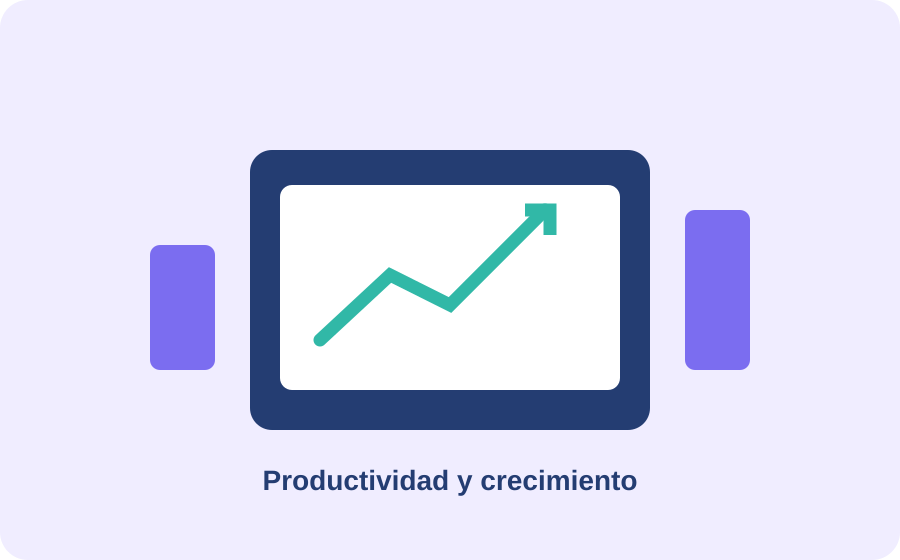

De lo tradicional a lo digital
Una empresa puede utilizar un sitio web como escaparate, una tienda electrónica para vender, redes sociales para comunicarse y sistemas en la nube para coordinar equipos.
Aplicaciones frecuentes
- Comercio electrónico y pagos digitales.
- Marketing, analítica y atención al cliente.
- Gestión de inventarios y procesos.
- Trabajo colaborativo y almacenamiento en la nube.
Beneficios y desafíos
| Herramienta | Beneficio empresarial | Precaución |
|---|---|---|
| Sitio web | Presencia y visibilidad permanente | Actualización y seguridad |
| Comercio electrónico | Ventas sin límites geográficos | Pagos y protección al consumidor |
| Analítica web | Decisiones basadas en datos | Privacidad y consentimiento |
| Servicios en la nube | Acceso y colaboración remota | Control de accesos y copias de seguridad |
Ejemplo práctico
Una pequeña tienda de productos artesanales crea un catálogo web, recibe pedidos mediante un formulario y publica contenido en redes sociales. Puede ampliar su mercado, pero debe mantener inventario actualizado, proteger los datos de sus clientes y ofrecer información clara sobre entregas y devoluciones.